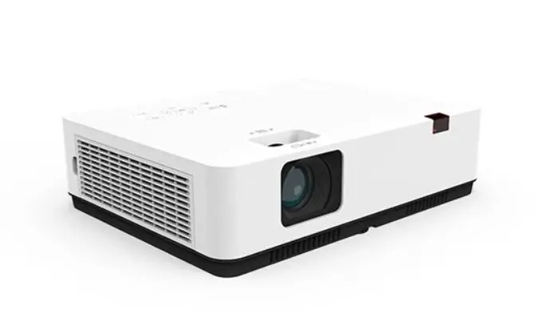

Серия Novo
Серия компактных и недорогих LCD-проекторов, созданных для небольших помещений — переговорных комнат, учебных классов и аудиторий. Технология 3LCD отвечает за насыщенные и естественные цвета, а световой поток до 3300 люмен обеспечивает яркое изображение на экране. Серия отличается лаконичным дизайном и простым управлением, что важно в образовательной сфере, ведь на занятиях нет времени на детальную настройку.